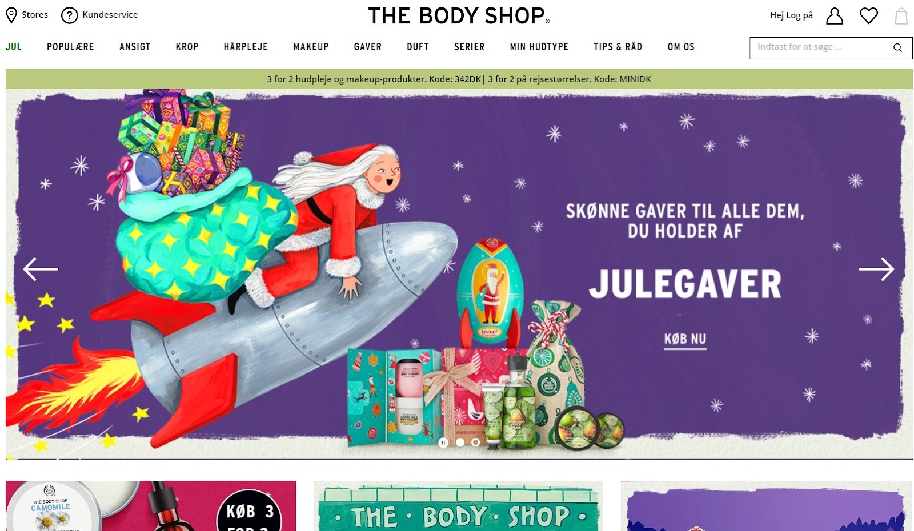
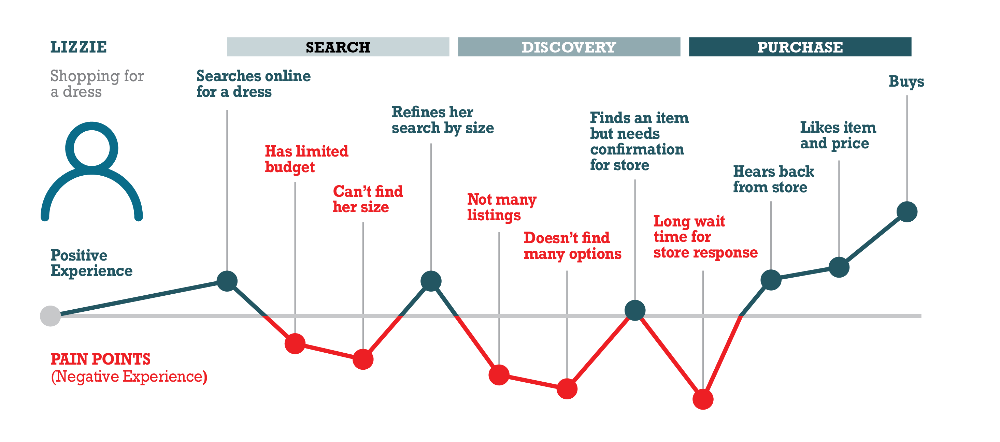

Interfacedesign handler om hvordan websitet bliver kommunikeret til brugerne. Her er brugerne i fokus, og man vil forsøge så vidt som muligt at gøre deres oplevelse gnidningsfrit.
Usability handler om at gøre et medie, fx et website eller app, brugbart og intuitivt for de som skal anvende det. Dette kaldes også for brugervenlighed, hvor det menes at brugerne får deres behov opfyldt. Dette er vigtigt for sit website, da websitet må formodes at blive skabt for at blive brugt – men hvis det ikke er brugbart, hvad er så pointen? Jakob Nielsen mener at man med usability stræber efter at gøre sit medie:
• Let at bruge
• Let at huske
• Effektivt at bruge
• Tolerant overfor fejl
• Tilfredsstillende at bruge
For websites handler det specielt om at sikre kvalitet. Usability-kriterierne for websites er delt op i to:
Den interne - Et krav som skaberens tilfredsstillelse for websitet
Den eksterne - Et krav som den generelle tilfredsstillelse for website.
For at vurderer et websites brugervenlighed, benytter man tests. Tests skal testes på testpersoner, for se om websitet er brugervenlig eller ej, hvorefter den justeres for fejl eller mangler. Her testes websitets funktionalitet og bruger tilfredshed også, for at se om brugerens mål og behov bliver opfyldt på den mest effektive og hurtigste måde. Det er vigtigt at føre tests tidligt i webudviklingen. Derfor udføres tests på skitser, prototyper og wireframes – altså imitationer af hvordan det endelige produkt skal se ud, men med plads til en masse forandringer. Derved undgår man at spilde tid på et website, som alligevel skal kodes helt om.
Der findes mange forskellige former for tests, som alle kommer an på et fokusområde - altså hvad det er, som man ønsker at teste ved websitet:
Brugertest - En af de bredeste tests. Testen har til formål at se om brugeren kan finde frem til den information de kom til og få fuldendt deres mål. Her bruges også tænke højt-metoden, for at få brugerens tanker med.
Gangstertest - Tester et websites layout og navigation. Her stilles der spørgsmål om hvorvidt brugeren kan se hvor de er, hvordan de kommer videre og hvordan de kom hertil.
Kortsortering - Er en effektiv test for at vurderer et websites navigation, for at se om brugerne kan finde det de leder efter.
Spørgeskema - En kvantitativ metode, hvor man efter en række spørgsmål til brugerne, kan samle data.
Ekspertvurdering - En generel måde at se hvorvidt websitet eller mediet overholder de krav, for de som faktisk skal bruge websitet eller mediet. Fx, hvis man laver en hjælpe-website eller app til læger, er de eksperten for at vurderer dets kvalitet og krav, da det er dem som skal benytte det. Webudvikleren selv kan umuligt kende lægernes intuitive krav.
Tilgængelighedstest - Handler om at gøre websitet tilgængeligt for så bred en gruppe som muligt. Her gælder det fx om ikke at gøre opbygningen indviklet og sørge for tekniske hjælpemidler, som fx højtlæsning af tekst eller tastaturbetjening.
Informationsarkitektur referer til et websites organisering og strukturering af information. Her er formålet at få brugeren til at nå sit mål på den mest effektive måde. Websites er efterhånden så udbredte, at de har navigationsmenuer, som indeholder flere sider og dokumenter med information. Meningen med informationsarkitektur er at gøre dette tilgængeligt på en overskuelig måde for brugerne. Efterhånden som de mest effektive layouts er blevet opdaget, er brugerne også blevet mere intuitive. Brugerne har en forventning til hvor visse elementer skal være placeret og betydningen af ikoner.
Richard Saul Wurmann maner at der findes 5 forskellige måder at organisere information på, til sammen kaldet LATCH:
Location - Information over fysisk eller geografisk placering, fx kort
Alphabet - Alfabetisk orden fra forbogstaver, fx bibliotek eller ordbog
Time - Organisering efter tid, fx tidslinje eller museum
Category - Sammensætningen af fællestræk eller emner, fx dagligvareprodukter
Hierarchy Information indelt i værdi, fx en skala
Eksempel på god informationarkitektur: The Body Shop – en hjemmeside hvor man kan købe og få information om forskellige former for plejeprodukter til kvinder.
• Hierarkisk struktur, med en forside og overblik over undersider
• Indeholder også sekventiel struktur ved køb af varer
• LATCH: Delt op i kategorier (jul, ansigt, krop, hårpleje mm), hvorefter nogle af underkategorierne er inddelt alfabetisk, fx serier
• Har en sæson kategori “jul”, brugervenlig knap til sæsonen, hvor mange vil købe julegaver
• Har en vandret globalmenu, søgefelt, ikoner til kundeservice, fysiske butikker, profil, favoritter og kurv. Generelt meget intuitiv.
User journey er en måde at undersøge, forstå og visualisere brugerens oplevelse af et website. Det ses ofte i en tidslinje, hvor der er taget højde for en persona, et scenarie og derefter den bestemte handling og følelserne det udløser. Brugeren oplevelse af websitet, kan webudviklerne bruge til at gøre deres site mere overskueligt og brugervenligt, ved at undersøge disse touchpoints hvor brugeren skal benytte websitet.
• Brugertest - Morten Kluw Wøldike Schmith
• Informationsarkitektur – Niels Østergaard
• Kommunikation i multimediedesign, kapitel 11 & 20 – Gunhild Marie Andersen
• Usability, kapitel 3 & 5 – Ole Gregersen og Ian Wisler-Poulsen
Ligesom med kommunikation, har jeg virkelig følt mig revet med af interfacedesign. Hele psykologien om hvordan vi mennesker handler og tænker på et website har virket meget ”Nårh ja, selvfølgelig”, men det har været spændende at indse og forstå det, så man kan bruge det! Det var også især her jeg begyndte at hvor brikkerne i det store website-pudslespil faldt sammen. Der er så mange pre, mid og post opgaver i designet af en website, og jeg føler at emnet interfacedesign er et man har med sig hele vejen.